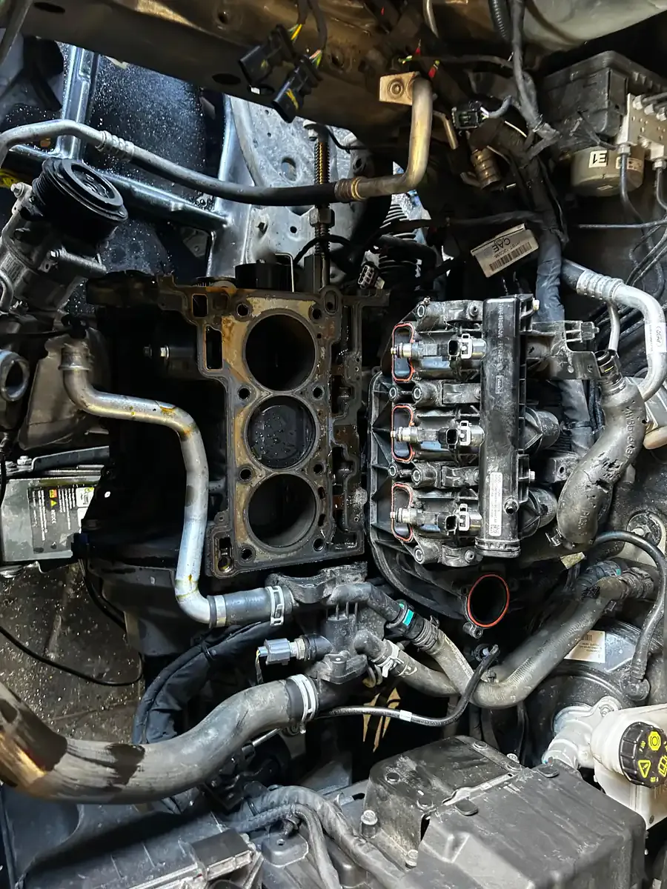
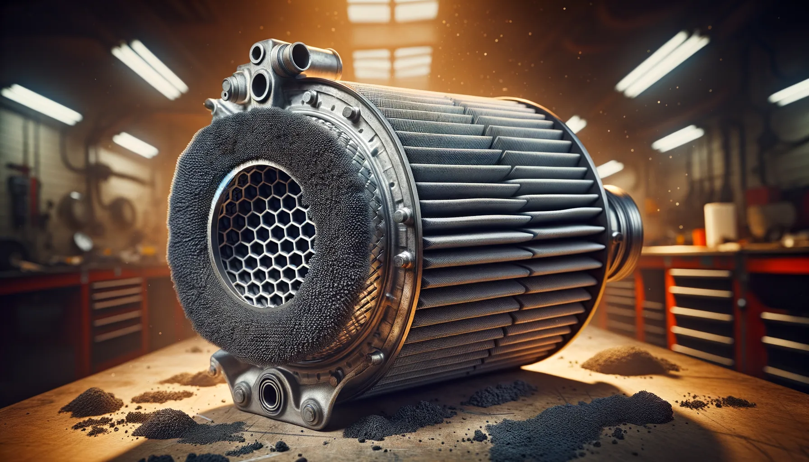
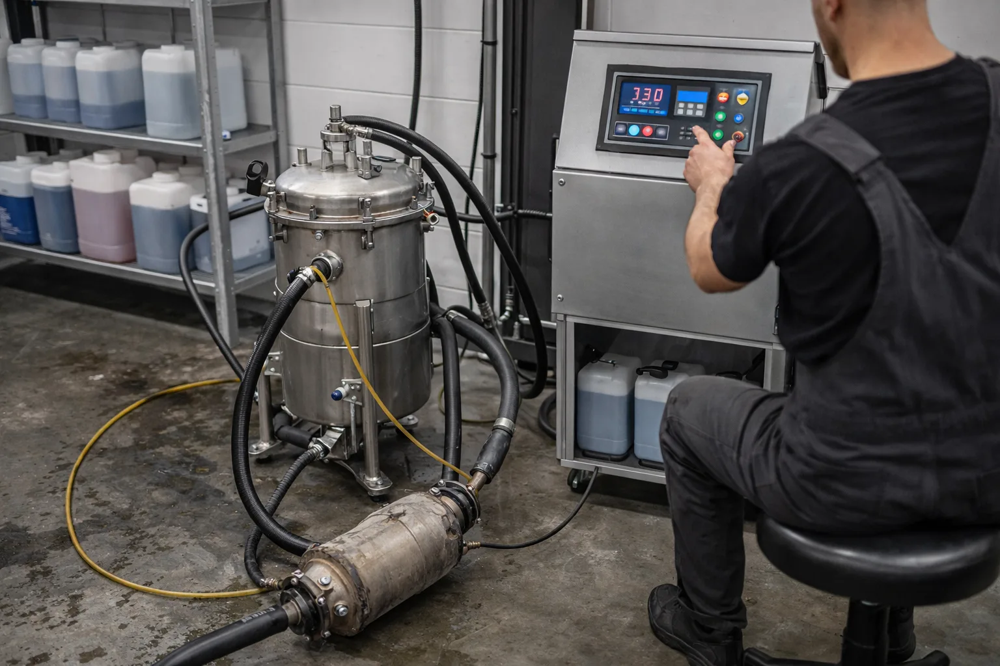
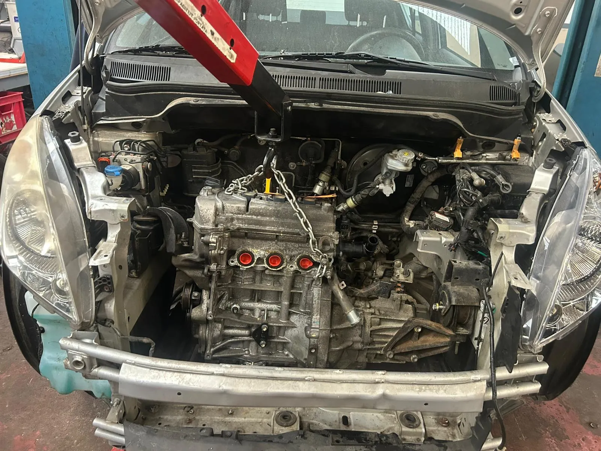
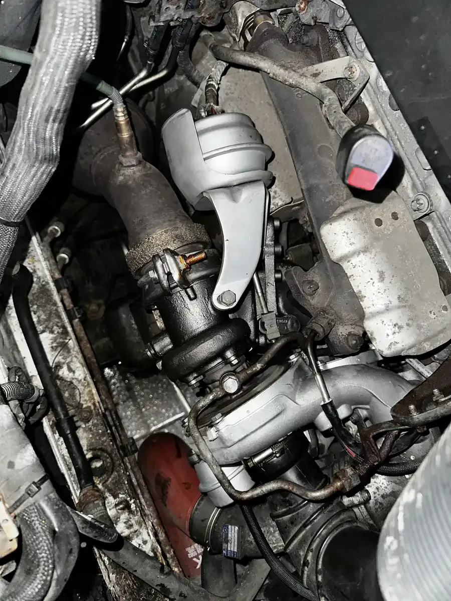

>Voyant FAP allumé ? Perte de puissance ? Mode dégradé ? Chez DMT AUTOGROUP à Zaventem, on diagnostique, on nettoie et on remplace les filtres à particules. Régénération forcée, nettoyage chimique, nettoyage machine. Nettoyage FAP à partir de 300€. Toutes marques diesel et essence.
Vous roulez tranquillement et d'un coup, un voyant orange apparaît sur le tableau de bord. Un petit filtre, parfois avec des points à côté. C'est le voyant FAP — filtre à particules. Ce que votre voiture essaie de vous dire, c'est simple : le filtre est chargé en suie et il n'arrive plus à se nettoyer tout seul.
En temps normal, votre FAP se régénère automatiquement. Le moteur monte en température, brûle les particules de suie, et le filtre se vide. Ça se fait en roulant, sans que vous le remarquiez. Mais si vous faites surtout des trajets courts — maison-travail en ville, courses au supermarché, déposer les enfants à l'école — le moteur n'atteint jamais la température nécessaire. La suie s'accumule. Le filtre se bouche. Et le voyant s'allume.
Si vous ignorez ce voyant, la situation empire. Le calculateur passe en mode dégradé : perte de puissance, moteur bridé à 3000 tours, parfois même le moteur refuse de démarrer. Les codes erreur P2002 (efficacité du filtre en dessous du seuil) ou P2463 (taux de suie trop élevé) apparaissent. À ce stade, une simple balade sur l'autoroute ne suffit plus — il faut une intervention.
Ne laissez pas traîner. Un voyant FAP pris à temps, c'est un nettoyage à 300€. Un voyant FAP ignoré pendant 6 mois, c'est un filtre mort et une facture de 2000€+. On voit la différence tous les jours chez DMT AUTOGROUP à Zaventem.
Quand un client arrive chez nous avec un problème de FAP, on ne remplace pas le filtre direct. Dans la grande majorité des cas, un nettoyage bien fait remet le filtre en état. Encore faut-il utiliser la bonne méthode.
Régénération forcée via diagnostic. On branche la valise, on lance une régénération forcée. Le moteur monte à haute température et brûle la suie accumulée dans le filtre. C'est la méthode la moins invasive et la moins chère. Ça fonctionne quand le taux de suie est élevé mais que le filtre n'est pas complètement obstrué. On surveille la pression différentielle en temps réel pendant la procédure pour s'assurer que ça descend bien.
Nettoyage chimique. Quand la régénération forcée ne suffit pas — trop de cendres, trop de résidus d'huile — on passe au chimique. Un produit nettoyant spécifique est injecté directement dans le filtre. Il dissout les cendres et les dépôts carbonés que la chaleur seule ne peut pas éliminer. Les cendres, contrairement à la suie, ne brûlent pas. Elles proviennent de l'huile moteur et des additifs. C'est souvent ça qui bloque un FAP sur un véhicule avec beaucoup de kilomètres.
Nettoyage par machine spécialisée. Pour les cas les plus sévères — filtre bouché à 80-90%, véhicule en mode dégradé complet — on utilise une machine de nettoyage FAP dédiée. Le filtre est démonté, nettoyé sous pression avec un flux d'air et de liquide de nettoyage, puis séché et remonté. C'est le nettoyage le plus complet. On retrouve un filtre quasi neuf.
La vraie comparaison de prix ? Un FAP neuf d'origine chez le concessionnaire, c'est entre 1500 et 3000€ pièce et main-d'œuvre. Un nettoyage chez DMT AUTOGROUP à Zaventem, c'est entre 300 et 600€ selon la méthode. Et dans 70% des cas, le nettoyage suffit. On ne remplace que quand c'est vraiment nécessaire.


Avant de nettoyer ou de remplacer quoi que ce soit, on diagnostique. Parce qu'un voyant FAP allumé, ça ne veut pas toujours dire que le filtre est foutu. Parfois c'est un capteur de pression différentielle qui déconne. Parfois c'est le capteur de température amont qui donne des valeurs aberrantes. Parfois c'est la vanne EGR qui fuit et qui envoie trop de suie vers le FAP.
Voilà ce qu'on fait concrètement. On lit les codes erreur — P2002, P2463, P244A, P2458, chacun raconte quelque chose de différent. On mesure le taux de suie réel stocké dans le calculateur. On lit la pression différentielle entre l'entrée et la sortie du filtre — c'est ça qui dit si le filtre est bouché ou pas. Un filtre propre, c'est quelques millibars de différence. Un filtre bouché, c'est 150-200 mbar ou plus.
On vérifie aussi les capteurs de température amont et aval. Si le capteur amont dit 400°C et le capteur aval dit 150°C, la régénération ne se fait pas correctement. Si les deux disent la même chose, le filtre ne filtre plus rien — il est probablement fissuré ou fondu à l'intérieur.
Et on finit toujours par un essai routier. Parce que les données sur l'écran, c'est bien, mais sentir la voiture rouler, c'est mieux. Un diagnostic moteur complet permet de voir si d'autres éléments contribuent au problème — turbo, injecteurs, EGR.
Parfois, le nettoyage ne suffit plus. Quand le substrat céramique à l'intérieur du filtre est fissuré, fondu, ou saturé de cendres après 250 000 km, aucun produit chimique ne va le sauver. Il faut remplacer.
On travaille avec deux options. FAP d'origine (OEM) — c'est le même filtre que celui que le constructeur monte en usine. Mêmes spécifications, même capacité de filtration, même durée de vie. C'est l'option la plus chère mais aussi la plus sûre. FAP aftermarket de qualité — des marques comme Walker, Klarius ou HJS qui fabriquent des filtres aux normes Euro 5/6. Moins cher, mais il faut choisir le bon fournisseur. On ne travaille pas avec du bas de gamme sans nom — un FAP de mauvaise qualité se bouche deux fois plus vite.
Et il y a un point que beaucoup de gens oublient : le contrôle technique en Belgique. Depuis 2022, les normes d'émissions sont plus strictes. Un FAP qui ne filtre pas correctement — parce qu'il est fissuré ou de mauvaise qualité — ça se voit à l'opacimètre. Votre voiture sera refusée. On installe des filtres qui passent le contrôle technique sans souci. C'est non négociable.


Le FAP, c'est un filtre. Et comme tout filtre, il finit par se remplir. Mais certains se bouchent en 50 000 km, d'autres tiennent 200 000 km. La différence, c'est l'utilisation de la voiture et l'entretien.
Les trajets courts en ville. C'est la cause numéro un. La régénération du FAP se déclenche quand le moteur atteint une certaine température — environ 600°C dans le filtre. En ville, entre les feux rouges et les embouteillages, vous n'atteignez jamais cette température. La suie s'accumule, couche après couche. Les gens qui habitent à Zaventem et qui prennent leur voiture pour faire 3 km jusqu'au Carrefour et retour, c'est exactement le profil à risque. On le voit toutes les semaines au garage.
Mauvaise huile moteur. Toutes les huiles moteur ne sont pas compatibles avec les véhicules équipés d'un FAP. Il faut une huile "low-SAPS" — faible teneur en sulfates, cendres et phosphore. Les spécifications ACEA C2, C3 ou C4 selon le constructeur. Si votre garagiste précédent a mis une huile classique 5W-40 au lieu d'une 5W-30 low-SAPS, votre FAP accumule des cendres métalliques qui ne brûlent pas. On vérifie toujours ça lors de la vidange. C'est un détail qui change tout.
Vanne EGR encrassée. La vanne EGR recircule les gaz d'échappement vers l'admission. Quand elle est encrassée — et elle l'est toujours sur les diesels après 80 000 km — elle envoie des gaz chargés de particules directement dans les cylindres. Le moteur produit plus de suie, et le FAP se remplit plus vite. Nettoyer le FAP sans vérifier l'EGR, c'est vider une baignoire sans fermer le robinet.
Conduite lente permanente. Même sans faire des trajets courts, rouler constamment à 50 km/h en 6ème vitesse avec le moteur à 1200 tours ne permet pas la régénération. Le moteur a besoin de charge et de régime pour chauffer le FAP. Les chauffeurs qui ne roulent jamais sur autoroute et qui traînent en sous-régime permanent bouchent leur FAP beaucoup plus vite.
Oui, mais pas longtemps en ville. Le voyant FAP signifie que le filtre est chargé en suie et qu'il faut lancer une régénération. Essayez 20-30 minutes d'autoroute à 2500-3000 tours. Si le voyant reste allumé après, appelez-nous — il faut une régénération forcée ou un nettoyage. Ne laissez pas traîner, sinon c'est le mode dégradé garanti.
Le nettoyage enlève la suie et les cendres du filtre — entre 300 et 600€. Le remplacement, c'est quand le filtre est fissuré ou trop saturé pour être récupéré — là c'est 1500-3000€. Dans 70% des cas, un bon nettoyage suffit. On fait toujours un diagnostic d'abord.
Entre 300 et 600€ chez DMT AUTOGROUP à Zaventem, selon la méthode (régénération forcée, nettoyage chimique ou nettoyage machine). À titre de comparaison, un FAP neuf chez le concessionnaire coûte entre 1500 et 3000€. On commence toujours par un diagnostic pour choisir la méthode la plus adaptée.
Souvent oui, mais pas toujours. Perte de puissance et fumée noire, c'est le symptôme classique d'un FAP bouché. Mais un turbo défaillant, un injecteur qui fuit ou une EGR encrassée peuvent donner exactement les mêmes symptômes. C'est pour ça qu'on fait un diagnostic complet avant de toucher quoi que ce soit. Appelez-nous au 0484 11 58 13.
Non, c'est illégal. Votre voiture ne passera pas le contrôle technique — l'opacimètre détecte immédiatement un véhicule sans FAP. Vous risquez aussi une amende et des problèmes d'assurance. Chez DMT AUTOGROUP, on ne fait pas de suppression. On nettoie, on régénère, ou on remplace — toujours dans les règles.
Nettoyage filtre à particules à partir de 300€
Lundi — Vendredi · 08:30 — 18:00
Mechelsesteenweg 270, 1933 Zaventem